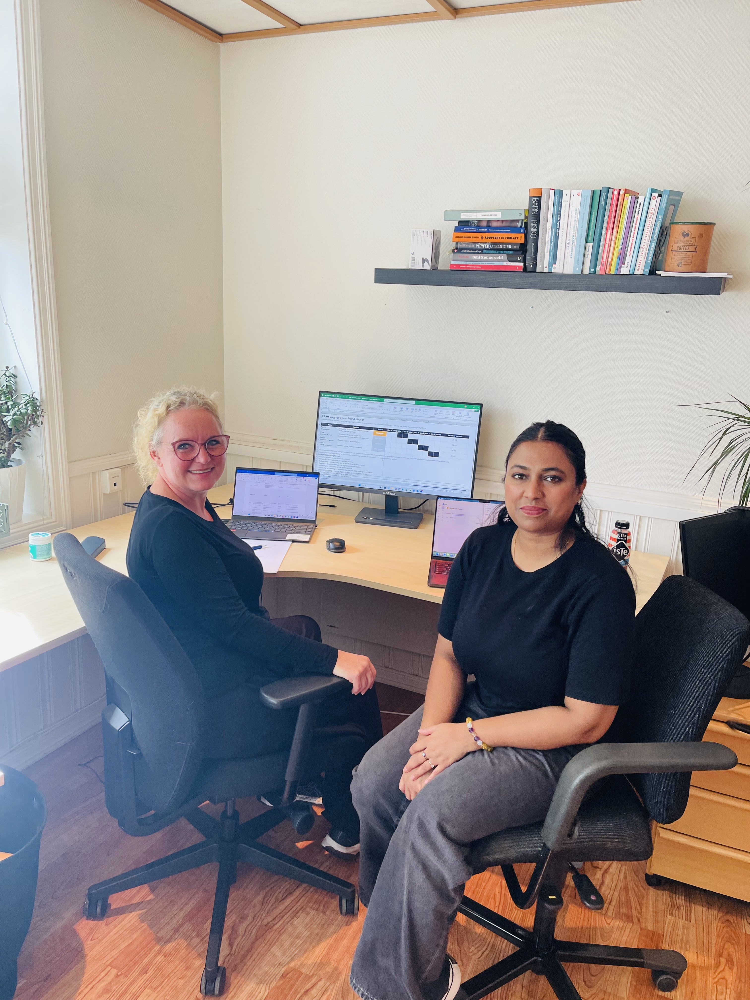
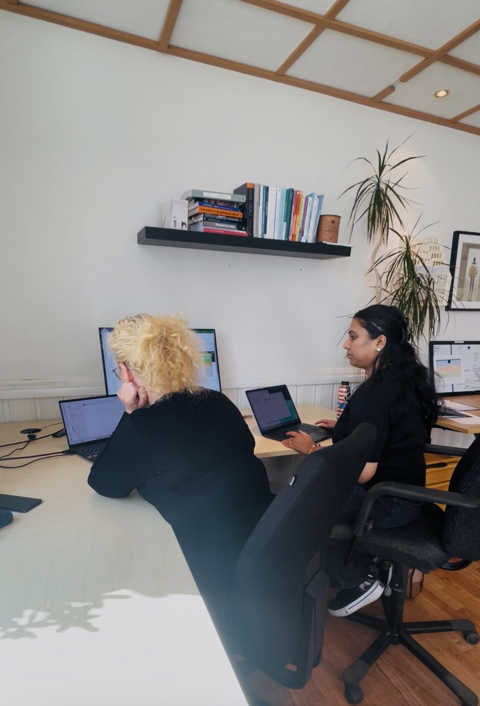

VIRKSOMHET
Sosial entreprenør
STATUS 1 · PRAKSIS HØSTEN 2026
Fra manuelle rutiner til smartere arbeidsprosesser.
Et praksisprosjekt om hvordan informasjonssystemer, prosjektledelse og digitale verktøy kan bidra til en enklere og mer helhetlig arbeidshverdag hos FRAM.
ARBEIDSOMRÅDE
Informasjonssystemer
METODE
Kartlegging og prosjektstyring
OM BEDRIFTEN
En sosial virksomhet med mennesket i sentrum
FRAM er en sosial entreprenør som utvikler og gjennomfører prosjekter for ungdom i risiko for utenforskap.
Virksomheten kombinerer sosialt arbeid, praktiske arbeidsoppgaver og tett oppfølging. Målet er å gi ungdom erfaring, mestring og muligheter til å delta i arbeidslivet.
FRAM har flere arbeidsområder med forskjellige behov. Digitale løsninger må derfor være fleksible, enkle å bruke og tilpasset både ansatte og ungdommenes arbeidshverdag.
Besøk FRAMs nettside ↗IT-PROSJEKTET
Først forstå behovene, deretter utvikle løsningen
Praksisperioden hos FRAM har så langt vært både lærerik og spennende. FRAM befinner seg i en utviklingsfase hvor virksomheten har behov for riktige digitale verktøy og en bedre struktur for informasjon. Mye av arbeidet utføres fortsatt manuelt, og de ulike avdelingene har forskjellige arbeidsprosesser og behov. Den første delen av prosjektet handler derfor om observasjon, kartlegging og prosjektstyring.
Gjennom deltakelse i møter med ulike avdelinger får jeg innsikt i hvordan organisasjonen arbeider, hvordan informasjon deles, og hvilke utfordringer de ansatte møter i hverdagen. Dagens bruk av Microsoft Teams, Excel, kalendere, planer og manuell oppfølging undersøkes for å finne områder som kan organiseres og forbedres.
Som student innen IT og Informasjonssystemer bidrar jeg med et projektperspektiv. Arbeidet handler om å forstå hvordan mennesker, informasjon, teknologi og arbeidsprosesser kan fungere bedre sammen. Målet er å finne løsninger som reduserer manuelt arbeid og gjør planlegging, kommunikasjon og oppfølging enklere.
PROSJEKTETS TO FASER
Fra eksisterende verktøy til et helhetlig system
01
PÅGÅENDE FASE
Bedre bruk av eksisterende verktøy
Den første fasen undersøker hvordan FRAM kan få mer verdi ut av Microsoft Teams og andre Microsoft 365-verktøy. Relevante verktøy, arbeidsflyter og muligheter for automatisering blir vurdert sammen med de ansatte.
02
NESTE FASE
Et mer samlet informasjonssystem
Den neste fasen skal strukturere funnene og vurdere hvordan FRAM kan utvikle et mer helhetlig datasystem tilpasset behovene i de forskjellige avdelingene.
ERFARINGER SÅ LANGT
Det mest interessante med praksisen
Prosjektledelse i praksis
Deltakelse i møter og kartlegging av forskjellige avdelinger gir praktisk erfaring med hvordan et reelt IT-prosjekt planlegges og organiseres.
Behov før teknologi
Før en løsning velges, må organisasjonens behov, brukere og arbeidsprosesser forstås. Teknologien skal støtte arbeidet, ikke gjøre det vanskeligere.
Informasjonssystemer
Praksisen viser hvordan mennesker, data, digitale verktøy og organisatoriske prosesser påvirker hverandre.
VIKTIG LÆRDOM
Det beste systemet er ikke nødvendigvis det som har flest funksjoner. Det er systemet som passer arbeidshverdagen og som mennesker faktisk ønsker å bruke.
BILDER FRA PRAKSISEN
Dokumentasjon fra arbeidshverdagen


VIDEO FRA PRAKSISEN
Et innblikk i arbeidshverdagen
Videoen viser deler av min vanlige arbeidshverdag hos FRAM og gir et innblikk i hvordan jeg arbeider med møter, observasjon, informasjonsinnsamling og kartlegging av digitale behov.
Den viser hvordan praksisarbeidet gjennomføres i det daglige, og hvordan jeg kombinerer prosjektarbeid, kommunikasjon og IT-faglig forståelse.